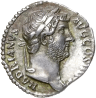

This is a map of the Roman Empire at the end of 883 from the foundation of the City (AD 130), as Emperor Hadrian himself could have drawn it, if he had modern cartographic tools and a little extra time, in addition to mourning his favorite Antinous.
There are 7891 settlements represented here both within the borders of the Empire and beyond. All objects on the map generally correspond to two unsurpassed catalogs of ancient geography — The Barrington Atlas and Pleiades project.
Click on any of the cities to get more detailed information about it. The search button is located at the top left, near the zoom slider.
You can download data files in the DATA tab. The ABOUT tab explains where and how everything was obtained.
| ROMA | — Rome and four largest capitals of provinces |
| Corduba | — other capitals of provinces and kingdoms | |
| Ctesiphon |
| Byzantium | — other cities sorted by Hanson's ranks: 1, 2, 3, 4-5 | |
| Mantinea | ||
| Antinoopolis | ||
| Delos | ||
| Pityous | — other cities | |
| Wheathampstead | — settlements whose ancient names are unknown |
| Alt name(s): | |
| Roman province: | |
| Start date: | |
| Modern place: | |
| Description (Pleiades): | |
|
Decimal: |
DMS:
|
|
|
Open this place in | | |
|
| Barrington Atlas: | |
| Ancient World Mapping Center (UNC-Chapel Hill): | |
| Digital Atlas of Roman and Medieval Civilizations (Harvard): | |
| Digital Atlas of the Roman Empire (University of Gothenburg): | |
| Orbis (Stanford): | |
| Pleiades: | |
| The Princeton Encyclopedia of Classical Sites: | |
| Tabula Peutingeriana (Cambridge): | |
| ToposText: | |
| Trismegistos: | |
| Urban Geography of the Roman World (Hanson 2016, Oxford): | |
| Vici.org: | |
| Wikidata: | |
| Wikipedia:en: |
You can freely download csv and geojson files of this project:
Full CSV file of cities and settlements (ver. 30.10.2023)
This project has two main goals. The first is to present, using modern means, an interactive map of the Roman Empire as of the end of AD 130, the time of the founding of Antinoopolis. The second goal is to connect disparate scientific databases of ancient Roman settlements, collecting their IDs and hyperlinks to them in one place.
The whole project is made on OpenLayers v8, in the form of several layers from geojson files. The map base, including coastline, inland water and provincial outlines, is taken from Ancient World Mapping Center. Numerous polygon errors have been fixed. Several provincial boundaries are aligned with certain geographic features. All settlements are linked to Pleiades catalog and, with rare exceptions, to The Barrington Atlas and Digital Atlas of Roman Empire.
If in some way someone's copyright has been violated or incorrectly attributed, please consider it an unintentional mistake and contact me.
This non-profit project does not pretend to be scientific and was made for fun, and yet I tried to be accurate. I will gladly accept criticism and advice both on the content and on the program code. Please send your comments and suggestions to me.
Ver. 1.0. © 2023 Diasito.
Code, data and maps licensed under the 2-Clause BSD License.